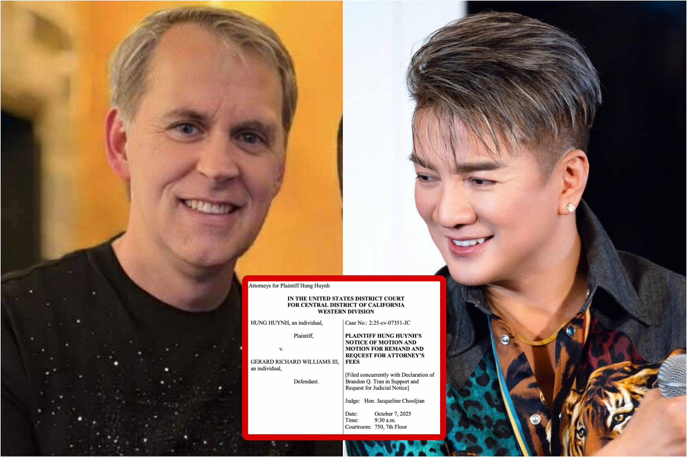

Bên cạnh sự nghiệp âm nhạc nổi bật, Đàm Vĩnh Hưng cũng từng vướng vào nhiều tranh luận và sự kiện gây chú ý trong dư luận. Những câu chuyện này đã tạo nên nhiều luồng ý kiến khác nhau và góp phần làm hình ảnh của anh trở nên đa chiều hơn trong mắt công chúng.

Trong quá trình hoạt động nghệ thuật, Đàm Vĩnh Hưng từng có những phát ngôn và hành động gây nhiều ý kiến trái chiều.Tuy nhiên, các sự kiện này cũng cho thấy cá tính mạnh mẽ và sự thẳng thắn của anh trong đời sống nghệ thuật.